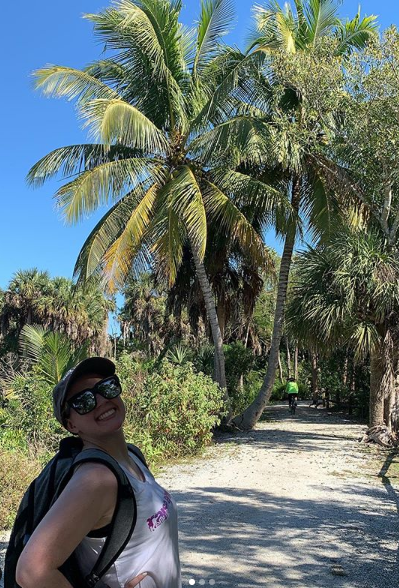
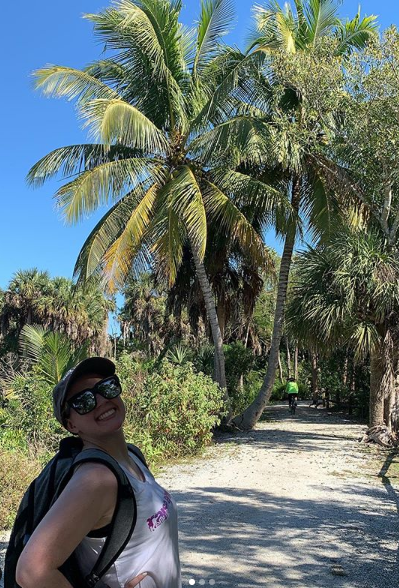

Some of my training:
Alyssa and I on a hike:
My staff and I during my tenure at Camp Yawgoog:


I first started programming when I was in highschool attempting to learn C++. I started off small and really only ever did small programs in the command prompt. Eventually I enrolled at the University of Rhode Island as a Computer Science major and made the dean's list. I graduated in May 2018. I thoroughly enjoyed learning programming (still always learning!) and I currently work as a software developer. Right now I live in soutern Rhode Island which turns out to be quite a rural area if you are not near the coastline. It's a comfortable and quiet place to live. As an Eagle Scout, I also enjoy being in the outdoors as well which of course includes the occasional camping trip every now and then. I love to learn and often find myself working on my car, building, and doing small programming projects. I'm also a heavy practitioner of the sport Parkour. The majority of my time outside of work and academics is spent at the gym working on my acrobatics.
Some of my training:
Alyssa and I on a hike:
My staff and I during my tenure at Camp Yawgoog: